Часть 1. Из чего состоит кофемашина
Внутреннее устройство
- Бойлер (котёл) — ёмкость, где вода нагревается до нужной температуры (обычно 90–96 °С).
- Помпа (насос) — создаёт давление в 9 бар, необходимое для превращения воды в эспрессо.
- Рабочая (варочная) группа — «выходное отверстие», куда мы вставляем холдер. Именно здесь горячая вода под давлением встречается с молотым кофе.
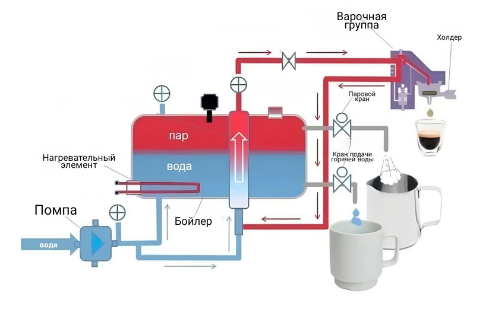
Схема устройства кофемашины
Важно! Обязательно следите за чистотой группы в течение дня: частицы кофе и кофейных масел окисляются и подгорают, что создаёт горький вкус.
Как чистить: в течение дня — мягкой щёткой и проливом воды (холостой пролив), слепым холдером без химии. Вечером — слепым холдером и специальным порошком.
Внешнее устройство
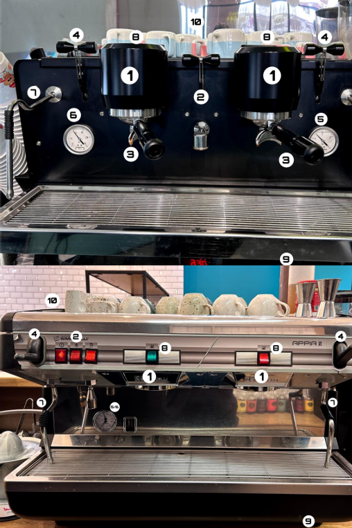
Внешний вид кофемашины с обозначениями
- 1 — Рабочие группы
- 2 — Кран / кнопка подачи горячей воды
- 3 — Холдер (портафильтр)
- 4 — Паровой кран
- 5 — Манометр бойлера (показывает давление внутри бойлера)
- 6 — Манометр помпы (показывает давление во время экстракции эспрессо)
- 7 — Пароотводящая трубка (стимер / паровик)
- 8 — Кнопки пролива
- 9 — Кнопка включения
- 10 — Подогрев чашек
Важно! Норма давления для манометров: 1–1.5 бар для бойлера и 8–10 бар для помпы.
Часть 2. Барный инвентарь
Холдер (портафильтр, рожок)
Это ручка с «корзиной». Бывают однорожковые и двухрожковые — для приготовления одной или двух порций сразу.
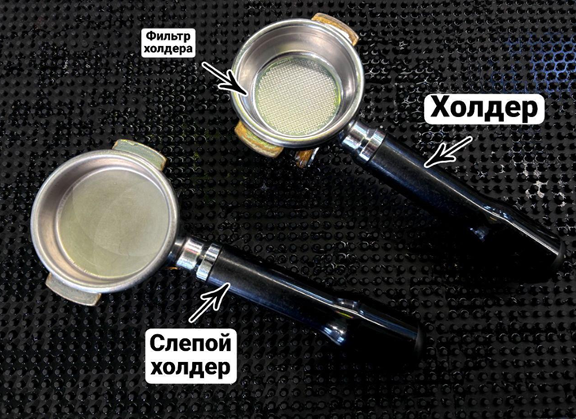
Холдер (справа) и слепой холдер (слева)
Важно! Перед приготовлением эспрессо холдер всегда должен быть чистым, сухим и горячим. Очищайте холдер после приготовления эспрессо от кофейной таблетки!
Фильтр холдера (корзина)
Это та самая сетчатая чаша внутри холдера, куда засыпается кофе. К каждому виду холдера (одно-/двухрожковому) подбирается своя корзина.
Слепой холдер — холдер с «корзиной» без отверстий для чистки рабочей группы.
Темпер
Пресс для выравнивания и уплотнения кофейной таблетки.
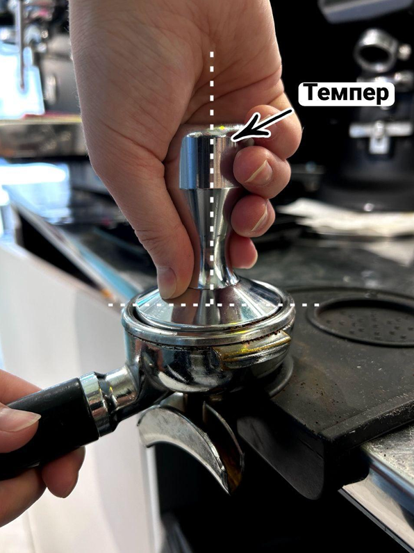
Правильное положение темпера
Важно! Держать темпер строго перпендикулярно поверхности. Нажимать плавно, создавая всегда одинаковое давление (10–15 кг).
Питчер (молочник)
Металлический кувшин для взбивания молока.
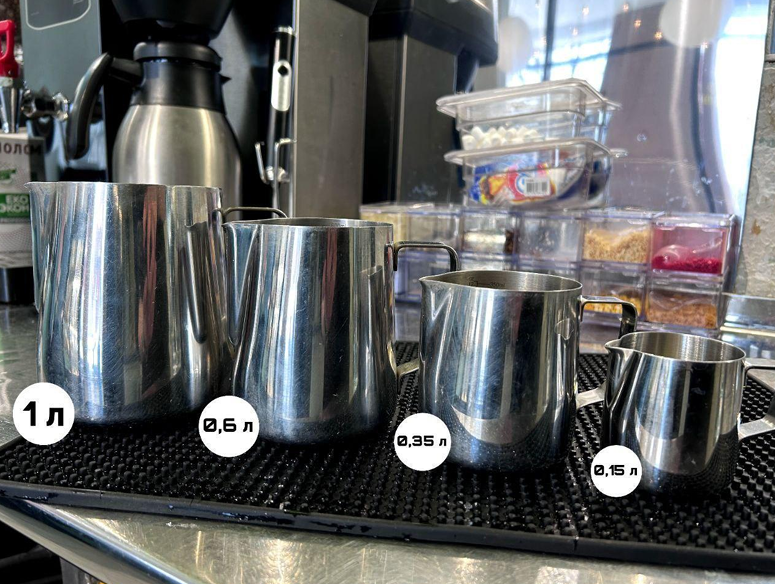
Питчеры: 1 л, 0.6 л, 0.35 л, 0.15 л
Джиггер
Мерный стаканчик, похожий на маленькую рюмку. Служит для точного измерения сиропов. Обычно двусторонний: 20/40 мл или 30/50 мл.
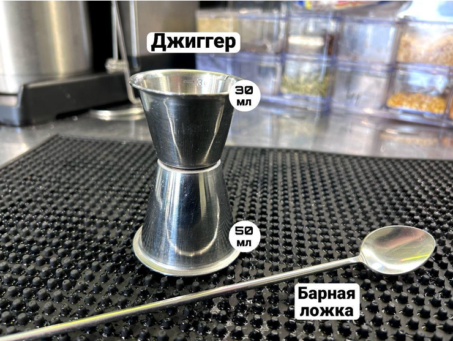
Джиггер 30/50 мл
Барная ложка
Длинная ложка. Нужна для:
- перемешивания напитков (лимонадов, авторского чая);
- снятия пенки (если нужно);
- дозирования ингредиентов.
Часть 3. Оборудование
1. Кофемолка (гриндер)
Внутри неё находятся жернова, которые срезают зерно, превращая его в частицы. Чем однороднее помол (все частицы одного размера), тем чище будет вкус эспрессо.
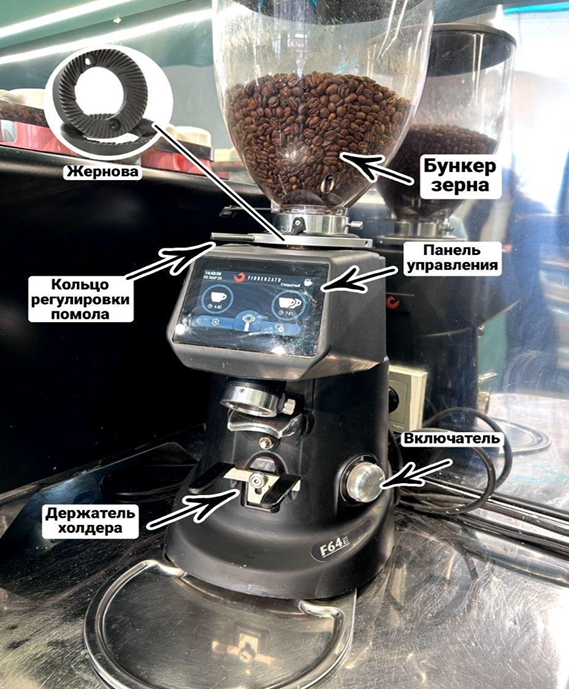
Устройство кофемолки
Важно! Кофемолку нужно настраивать ежедневно, потому что зерно «дышит» — меняет свойства от влажности и температуры воздуха.
2. Капельная кофеварка
Предназначена для приготовления фильтр-кофе.
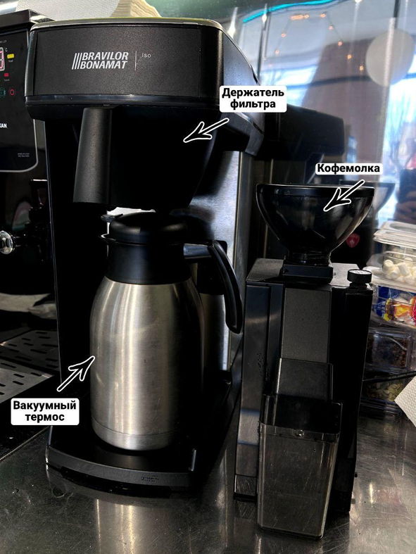
Капельная кофеварка Bravilor Bonamat
Важно! Для фильтр-кофе используется специальное зерно с пометкой FILTER, которое предварительно перемалывается в маленькой кофемолке.
3. Блендер
Используем для взбивания (милкшейки, глясе) и пюрирования (пюре для ягодного чая).
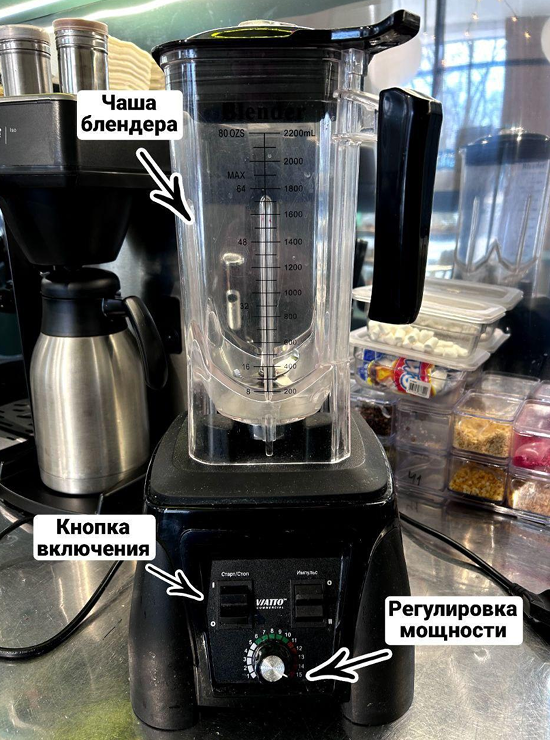
Блендер Viatto
4. Соковыжималка
Выжимаем сок из апельсинов, необходимый для приготовления апельсинового фреша и кофе тюр.
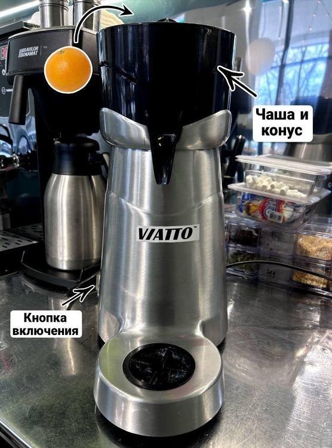
Соковыжималка Viatto
5. Лёдогенератор
Автоматически намораживает пищевой лёд для холодных напитков.
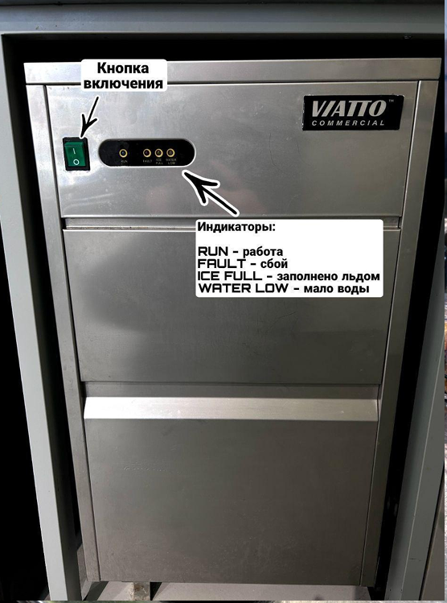
Лёдогенератор Viatto
Индикаторы:
- RUN — работа
- FAULT — сбой
- ICE FULL — заполнено льдом
- WATER LOW — мало воды
6. Бойлер
Предназначен для автоматического нагрева воды для таких напитков, как чай, американо, для заваривания матчи.
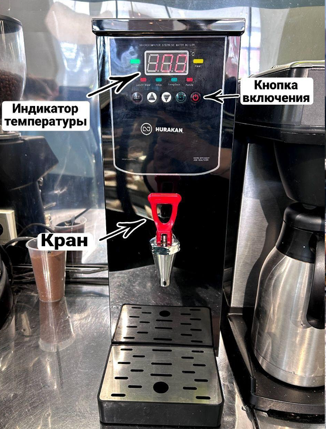
Бойлер Hurakan